Outreach
Public astronomy events, classroom material in English and Hindi, and instructional videos for school astronomy labs, produced with fellow students at the Department of Astronomy, Astrophysics and Space Engineering, IIT Indore.
100 Hours of Astronomy: The Overview Effect
International Astronomical Union global event, hosted by DAASE, IIT Indore
- Talks by faculty, PhD and M.Sc. students
- Astronomy quizzes, hands-on telescope-building workshops
- Night-sky and Sun observing sessions, career Q&A


Celebration kit for schools
Ready-to-use material for 23 August celebrations, including the Yajur Vedshala school labs
- Introductory videos in English and Hindi
- Story writing and essay topics (up to class 6), debate topics
- Space hackathon for classes 9–12: identify lunar craters and compute their size from a scale, with answer key
- Space quizzes in English and Hindi with answer keys
Chandrayaan-3 and Aditya-L1 explainers
Launch and landing coverage, discussion videos in English and Hindi, and bilingual multiple-choice quizzes on both missions
Space Events website
Built with Pranjal Chaturvedi (STARC Lab): mission explainers, an ISRO missions compendium (spacecraft, student satellites, re-entry missions), astronomy news and astrophotography
Outreach sessions with schools and colleges
Regular programmes for students in and around Indore
Club Head, Astronomy, Space Engineering and Technology (AsSET) Club
Each kit of the Astronomy and Space Innovation (ASI) Lab programme has a video walkthrough, recorded in English and Hindi. The kits are used in the Yajur Vedshala labs in government schools of Haryana (with the Haryana School Shiksha Pariyojna Parishad), the HICASE Lab at C-ELITE, Ujjain Engineering College, and the Astronomy and Space Tinkering Lab at PM SHRI Kendriya Vidyalaya, IIT Indore.
Explainers made for the Chandrayaan-3 landing and the Aditya-L1 launch, and the introduction used in National Space Day celebrations in schools.
Printable material for schools: activities for National Space Day and quizzes on India’s lunar and solar missions, with answer keys.
Night-sky, solar and lunar photographs from the astrophotography section of the Space Events website, taken at IIT Indore. Watermarked images: © Pranjal Chaturvedi.

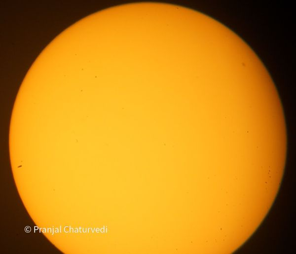

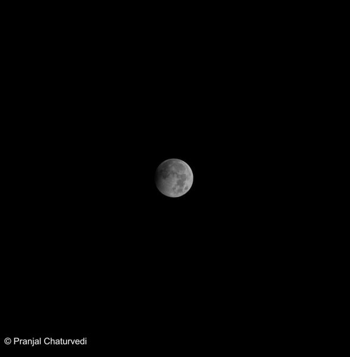


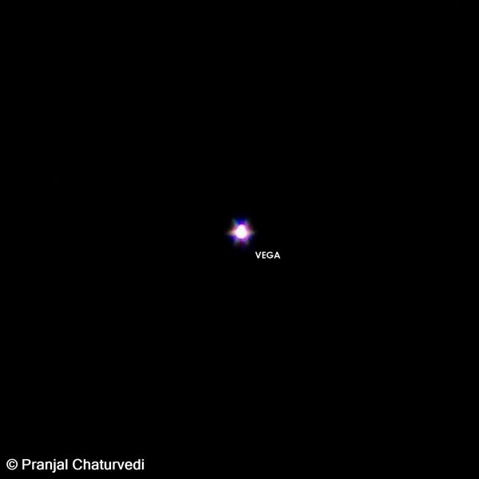

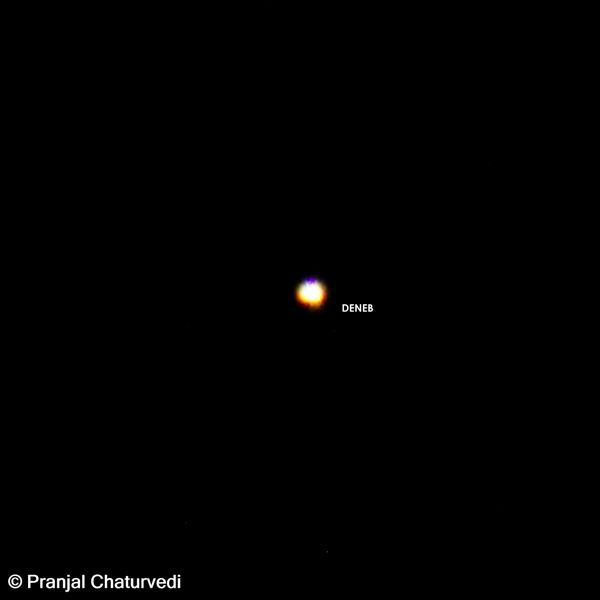

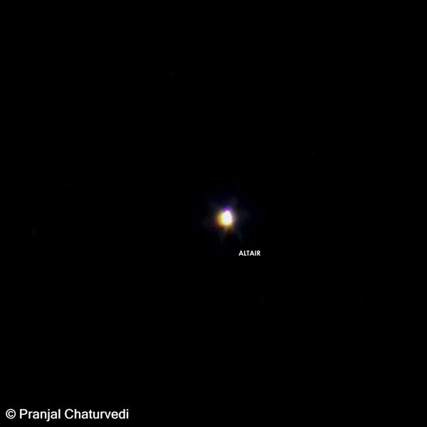

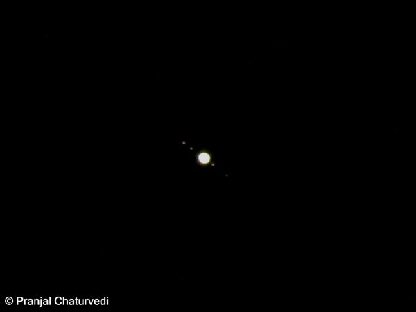

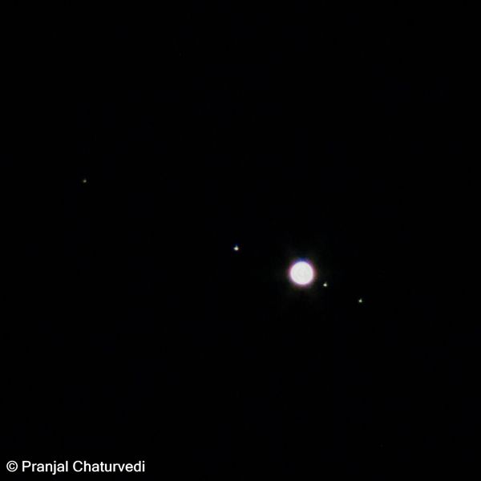

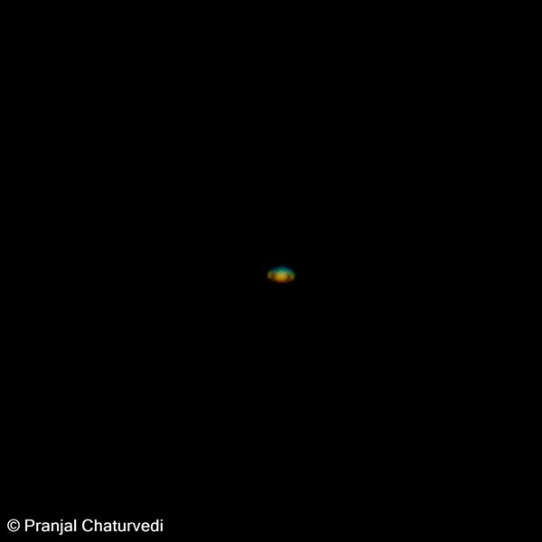

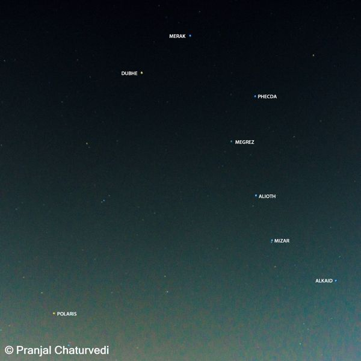

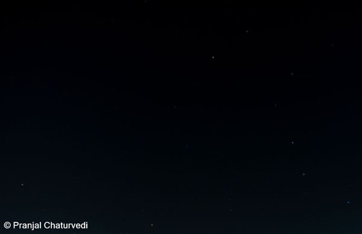

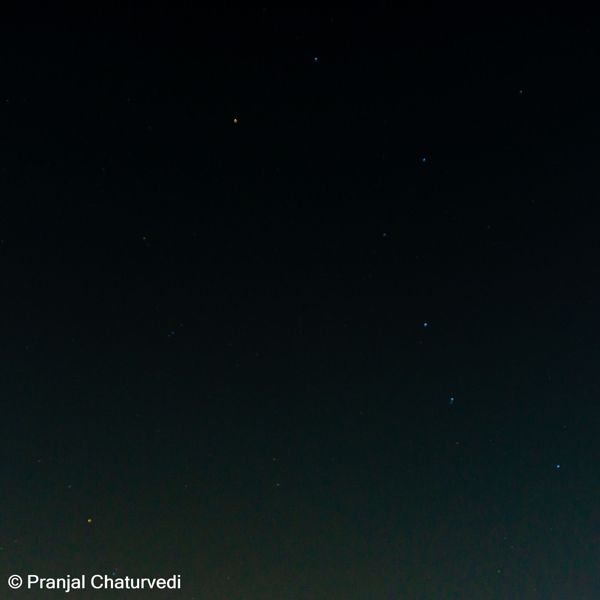

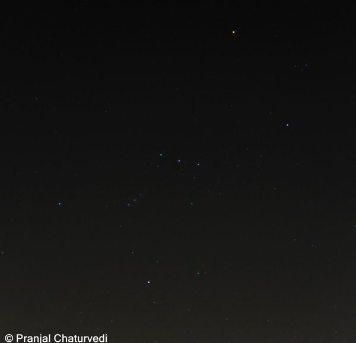

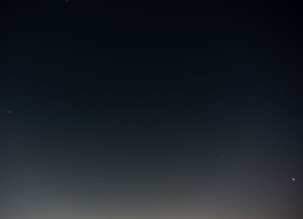

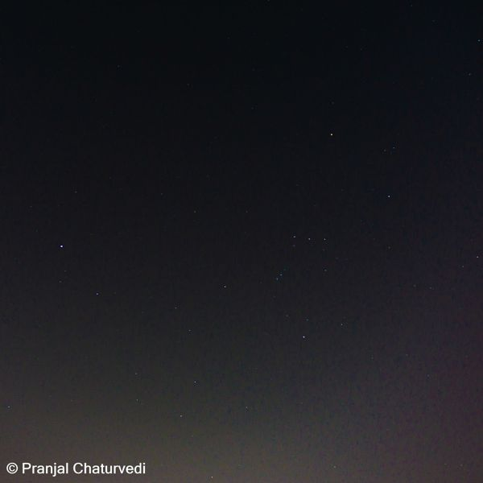

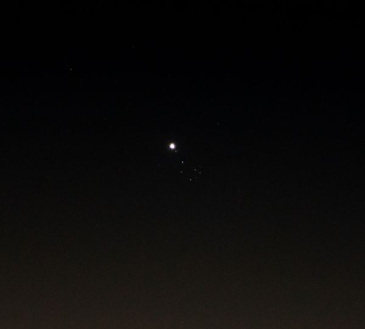

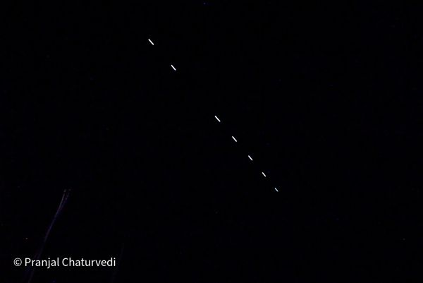

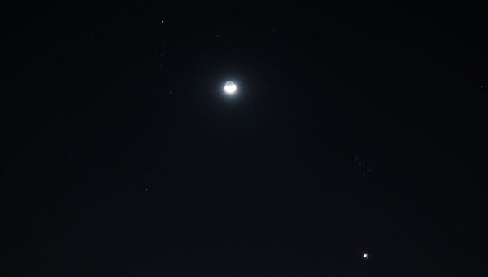

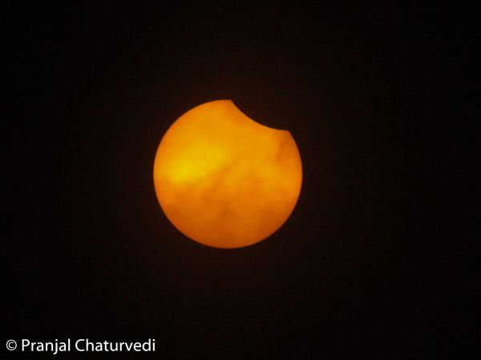

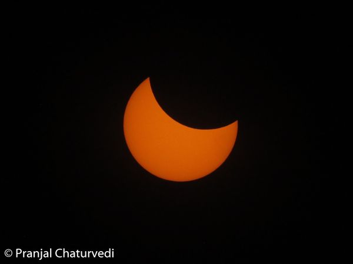

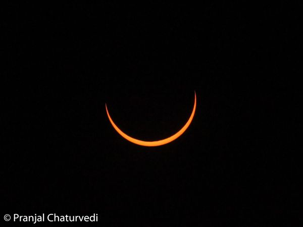

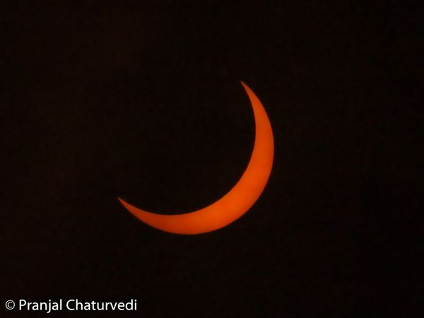

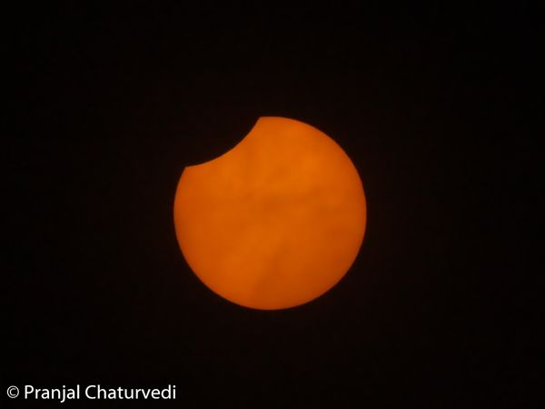

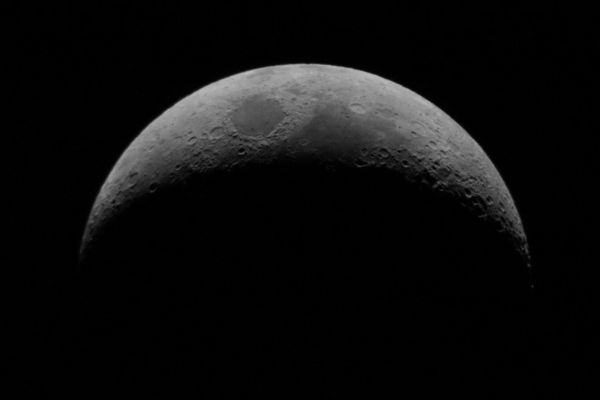

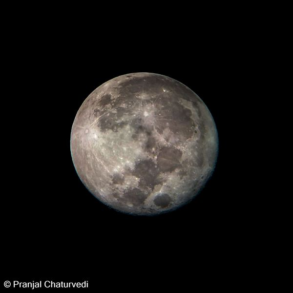

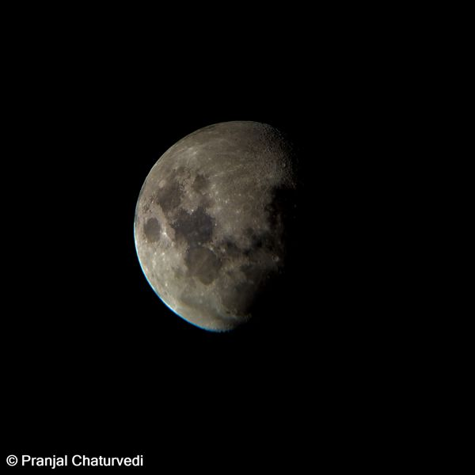

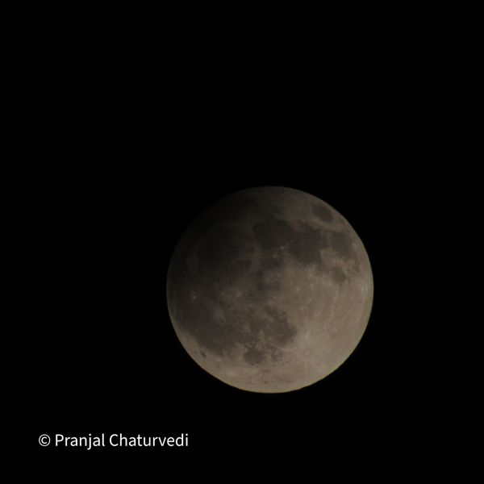

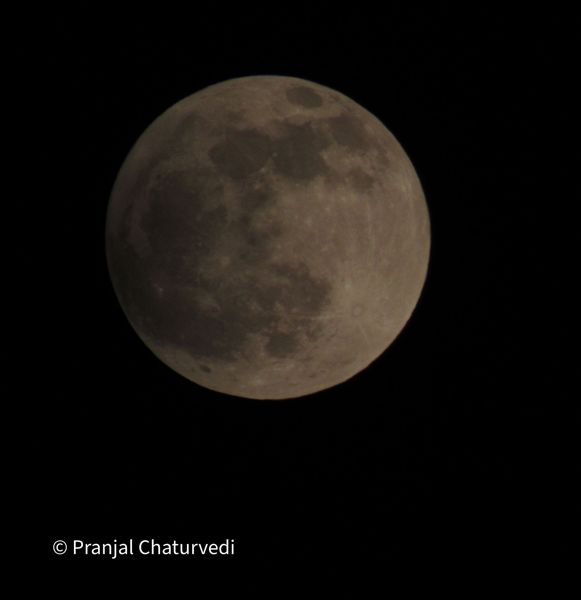